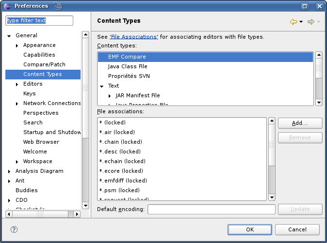

Authors Cédric Brun Contact cedric.brun@obeo.fr
Copyright 2007-2010, Obeo ©
To install EMF Compare you’ll need to use either the EMF update-site :
or the build bits from the: download page
EMF Compare depends on:
EMF compare uses a content-type to know whether it should be used for comparison. This content-type will initially register itself against .ecore and .uml files.
You may add your own extension using the Preferences view / Global / Content-types and adding your file extension in the “EMF Compare” content-type.

Once activated you can compare your file (locally or from any Configuration Management System supported by the Team API) using the compare with menu in Eclipse.
The following areas are highlighted in the picture :
1. The diff model displaying all the differences found on the models
2. The version 1 model
3. The version 2 model
4. The “export differences” button
5. Move to next/Move to previous difference
6. Merge the current difference (left to right or right to left)
7. Merge all non conflicting differences (left to right or right to left)
8. Display properties differences
Note that some actions may be disabled depending on whether you are using VCS or not.